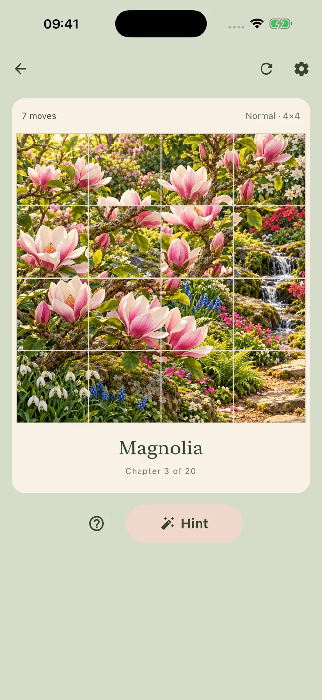
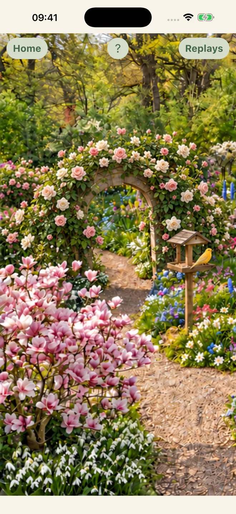
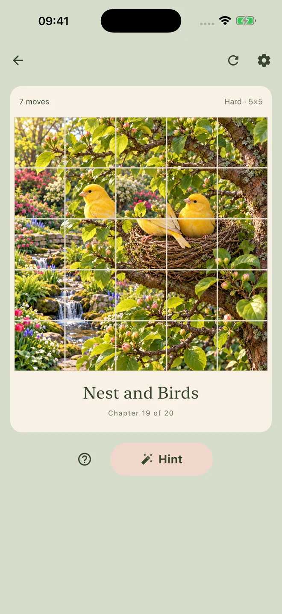

Android & iOS
Magic Garden: Picture Puzzles
A little puzzle.
A little spring.
Swap picture tiles, discover 20 garden chapters, and bring a quiet winter garden back to life.
Available on Google Play. The iOS release is currently under App Store review.

Watch your garden bloom
Complete 20 illustrated chapters and watch a snow-covered garden gradually come into bloom.
Find your level
Pick a 3×3, 4×4 or 5×5 board for a quick break or a bigger challenge.
Take your time
There is no countdown. Use a hint, enjoy gentle music and nature sounds, and return to your saved puzzle later.
TAKE A LOOK AROUND
A little preview.


Good to know.
Do tiles have to be next to each other?
No. You can swap any two tiles to rebuild the picture.
Is there a time limit?
No. Play at your own pace on any of the three board sizes.
Can I play offline?
The core puzzles work offline. Advertising and other online services require an internet connection. Magic Garden contains ads.
Where is my progress saved?
Your progress is saved on your device. You can leave a puzzle and return to it later, or replay completed pictures.
Where can I read the privacy policy?
A REAL PERSON, ON THE OTHER SIDE
Need a hand?
Questions, ideas or something not working? Write to me.
Include the app name, your device and what happened.